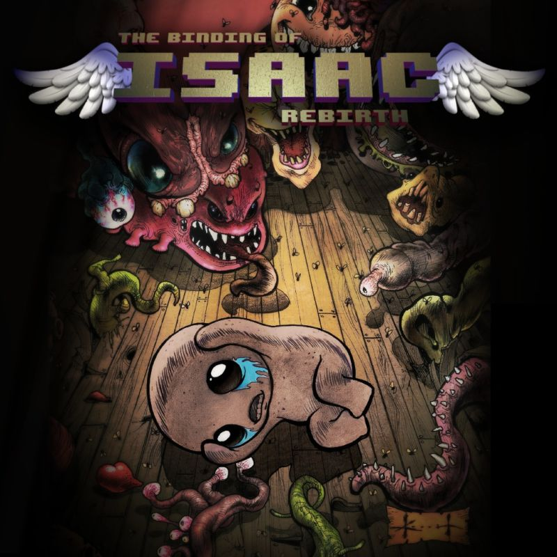

The Binding of Isaac: Rebirth is an indie roguelike video game designed by Edmund McMillen and developed and published by Nicalis.
Rebirth was released for Linux, Microsoft Windows, OS X, PlayStation 4 and PlayStation Vita in November 2014, for Xbox One, New Nintendo 3DS and Wii U in July 2015, for iOS in January 2017 and for Nintendo Switch in March 2017.
The PlayStation 5 and Xbox Series X/S versions were released in November 2021.
| Developer |
Nicalis |
| Genre |
Action Rogue-Like |
| Camera |
Fixed |